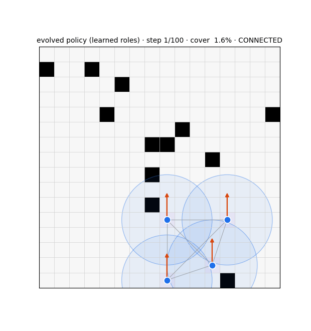

The honest core. The system produced both the cooperation we wanted and a series of degenerate or surprising behaviors that were as informative as the successes.
Wanted emergence
Decentralization wins. Independent learners match CTDE and beat the joint policy; IPPO spontaneously forms a stretched relay chain to ferry coverage information.
Selective, structure-aware relaying emerged from ES — relaying cut-vertices 94% vs redundant agents 3% — the very thing actor-critic could not learn (its shared advantage made roles structure-blind). And it transferred to a 2.5× larger team (78% on cut-vertices) with no retraining.
Belief accumulation. The graph belief's accuracy rises over the episode at both scales — it genuinely integrates neighbor information through time, the thing the snapshot net could not do.
Symmetry-breaking. The policy uses stochastic tie-breaks for "who goes left / who goes right" — the mechanism behind coordinated dispersal (and fragile to evaluation protocol, below).

Evolved specialization — distinct roles emerging from a gradient-free search.
Unwanted / weird emergence (failure modes)
The clump. Trained with a fitness that rewarded connectivity + cohesion, ES collapsed to the degenerate optimum: relay 100%, coverage 2%, connectivity 100% — everyone huddles forever, trivially "connected," covering nothing. Fix: reshape the fitness (coverage primary, connectivity bonus, relay-fraction penalty); never reward huddling.
The ES freeze. With the relay decision behind a hard hysteresis threshold, if no agent's P(relay) sits near the threshold on the training maps, no perturbation flips a decision → a flat fitness landscape → fitness frozen for all generations, zero learning. Fix: stochastic relay during training (Bernoulli(P)) so P drives expected behavior smoothly; verified the landscape became non-flat (fitness std 0.0 → 0.062) before committing the run.
The geometric wall. At 32×32 / 10 agents / comm-range 5, relaying cannot buy global connectivity — holding local bridges can't re-join components that have drifted apart. A coverage-aware optimizer therefore correctly suppresses relay, and connectivity reverts toward the compass baseline. The ceiling is structural, not a policy failure — confirmed from both directions (the role-switcher transfers yet connectivity still fails; re-training drops relay).
Stuck-relay. A relay whose target is "HOLD position" is a fixed point — agents never switched back to frontier. Fix: relay → move toward the herd centroid + hysteresis release. Resolved (switching is now ~50/50 both directions).
Snapshot-estimator OOD collapse. The feedforward snapshot estimator (88% @16) collapsed to trivial at 32×32: trained at N=4, its bilinear head could not even reproduce the visible graph at N=10. Diagnosis (now central to the architecture): graph estimation is a dynamic message-passing process — a snapshot classifier is the wrong model class. Fix: the recurrent belief.
Argmax collapses symmetry-breaking. Greedy/argmax evaluation destroys the stochastic left/right tie-breaks — catastrophic-failure rate jumps from 0% to ~46%. Mandated fix: always evaluate with stochastic-π (ε = 0). (An early "greedy" report of 87/83/95 fell to 79/60/88 under honest stochastic eval — the protocol oversold results.)
Degree-budget mis-calibration at scale. The mission-safety budget that works at N=4 (keep ≥ 1 of 3) becomes infeasible at N=10 (keep ≥ 7 → ~45% safety violations). At N=10 it had to relax to "don't fully detach" — a much weaker guarantee, still violated 5–9% of steps because the geometry forces detachment.
Training-process notes. TD(0) critic targets diverged (self-referential with the non-stationary global-seen mask) → switched to Monte-Carlo returns. The best config overfit on 4 training maps (68% held-out connectivity) → needed 14 maps to generalize. Belief transfer peaks mid-training then drifts as it overfits N=4 → early-stop on a held-out scale.
No division of labor (the flooding result). The 2026-06-22 fixed-100-step diagnostic shows no controller divides the map: the redundancy floor is ≥ 2.2 everywhere, rising to ~6–8 at scale. The agent sweep @32×32 is the proof — redundancy climbs 3.68 → 7.87 from N6 → N18 while coverage climbs 60% → 100%. Adding agents floods the map rather than dividing it; the 100% coverage is brute force, not coordination.
Information is not the bottleneck (the Fiedler-oracle null). Feeding a perfect global-connectivity signal (exact eigendecomposition λ₂ + each agent's own Fiedler component) into the role gate produced no relays (0–2%) and connectivity worse than baseline at scale (16% @32×32, 14% @40×40). The swarm cannot act on connectivity information it already has — the limit is the action space, not perception.
Adaptive-λ walks straight into the clump (again). A Lagrangian on connectivity ran λ up to ~1.5 and converged on the degenerate all-relay optimum: relay 94–100%, connectivity 100% trivially, coverage 4–40%. The constraint solver rediscovered the huddle.
Emergence only when we cheat the clock. The only run where roles emerged and connectivity held (relay 67–87%, conn 68–88%) was the "episodes" mode with 2× episode length — which violates the fixed-100-step protocol. Give the swarm more time and emergence reappears; hold time fixed and it vanishes. The apparent emergence was a time budget, not coordination.
Why the failure modes matter for the research question. Several are themselves benign micro→macro amplifications — one stuck agent fragments the team; one mis-calibrated budget collapses the role distribution. They preview exactly what a deliberately covert agent would exploit, and the load-bearing positions they exploit (cut-vertices, relays) are precisely the amplification map the research question predicts.